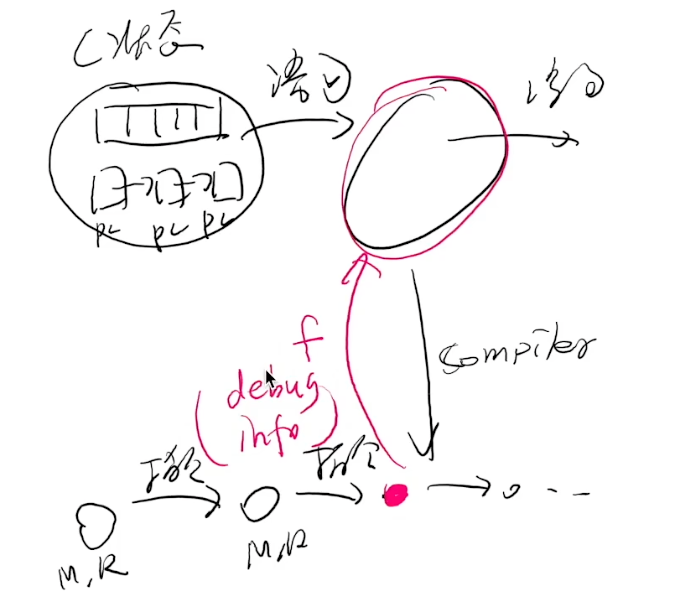
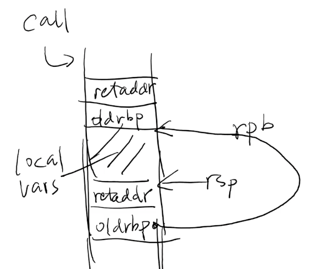
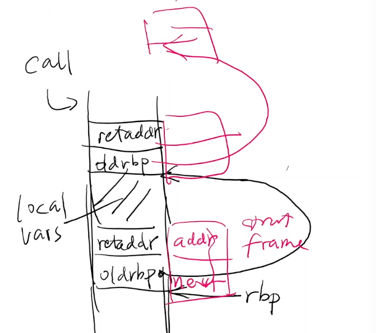
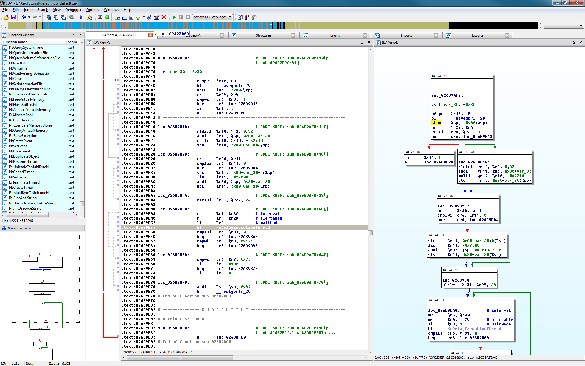
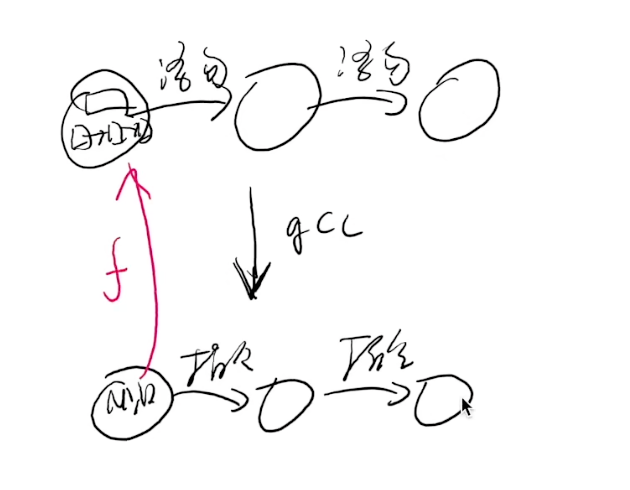
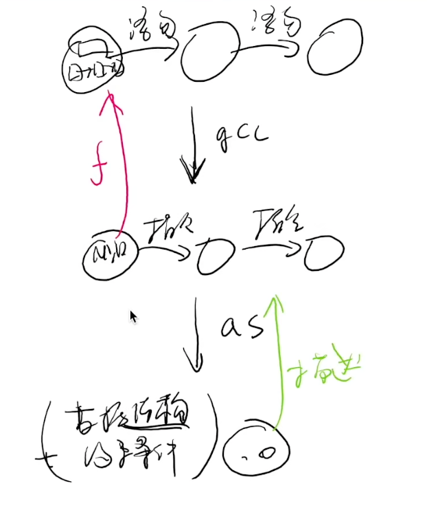
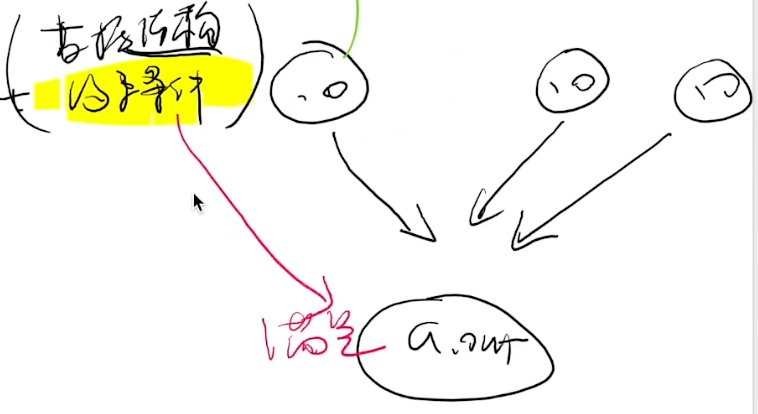

可执行文件
Overview
复习
- A
fork()in the road: 创造平行宇宙
本次课回答的问题
- Q1: 可执行文件到底是什么？
- Q2: 可执行文件是如何在操作系统上被执行的？
本次课主要内容
- 可执行文件
- 解析可执行文件
- 链接和加载
- 今天假设只有静态链接
一、可执行文件
1、RTFM
本次课涉及的手册
- System V ABI: System V Application Binary Interface (AMD64 Architecture Processor Supplement) (repo)
- 和更多 refspecs
(不用听了，可以下课了)
- 课堂要回答的问题
- 为什么 fucking manual 是 fucking 的？因为缺少很多前置概念
- 应该怎么读手册？现在简单的模型上，把一些基本概念搞清楚（能够写一些代码），再一点一点从外往内看
2、可执行文件：状态机的描述
可执行文件是在 execve([...], ...) 系统调用时使用的
execve 是把当前进程的状态机做重置，reset 成这个程序可执行的初始状态
操作系统 “为程序 (状态机) 提供执行环境”
- 可执行文件 (状态机的描述) 是最重要的操作系统对象！
二进制文件是一个描述了状态机的初始状态 + 迁移的数据结构
- 寄存器
- 大部分由 ABI 规定，操作系统负责设置
- 例如初始的 PC
- 地址空间
- 二进制文件 + ABI 共同决定
- 例如 argv 和 envp (和其他信息) 的存储
- 其他有用的信息 (例如便于调试和 core dump 的信息)
3、例子：操作系统上的可执行文件
需要满足若干条件
- 具有执行 (x) 权限
- 加载器能识别的可执行文件
$ ./a.c
bash: ./a.c: Permission denied
$ chmod -x a.out && ./a.out
fish: The file “./a.out” is not executable by this user
$ chmod +x a.c && ./a.c
Failed to execute process './a.c'. Reason:
exec: Exec format error
The file './a.c' is marked as an executable but could not be run by the operating system.
4、是谁决定了一个文件能不能执行？
操作系统代码 (execve) 决定的。
动手试一试
- strace ./a.c
- 你可以看到失败的 execve!
- 没有执行权限的 a.c: execve = -1, EACCESS
- 有执行权限的 a.c: execve = -1, ENOEXEC
- 再读一遍 execve (2) 的手册
- 读手册的方法：先理解主干行为、再查漏补缺
- “ERRORS” 规定了什么时候不能执行
$ strace ./a.c
execve("./a.c", ["./a.c"], 0x7ffdbebe32e0 /* 28 vars */) = -1 EACCES (Permission denied)
fstat(2, {st_mode=S_IFCHR|0600, st_rdev=makedev(136, 0), ...}) = 0
write(2, "strace: exec: Permission denied\n", 32strace: exec: Permission denied
) = 32
getpid() = 16227
exit_group(1) = ?
+++ exited with 1 +++
$ chmod +x a.c
$ strace ./a.c
execve("./a.c", ["./a.c"], 0x7ffc8bde7430 /* 28 vars */) = -1 ENOEXEC (Exec format error)
fstat(2, {st_mode=S_IFCHR|0600, st_rdev=makedev(136, 0), ...}) = 0
write(2, "strace: exec: Exec format error\n", 32strace: exec: Exec format error
) = 32
getpid() = 16236
exit_group(1) = ?
+++ exited with 1 +++
5、常见的可执行文件
就是操作系统里的一个普通对象
- 绿导师原谅你了.avi
- Windows 95/NT+, UEFI
- PE (Portable Executable), since Windows 95/NT+
- UNIX/Linux
- a.out (deprecated)
- ELF (Executable Linkable Format)
- She-bang
- 我们可以试着 She-bang 一个自己的可执行文件！
- She-bang 其实是一个 “偷换参数” 的 execve
$ cat a.c
#!/usr/bin/python3
print("Hello")
$ chmod +x a.c
$ file a.c
a.c: Python script, ASCII text executable
$ ./a.c
Hello
另一个例子
$ cat a.c
#include <stdio.h>
int main(int argc, char *argv[]) {
for (int i = 0; i < argc; i++) {
printf("argv[%d] = %s\n", i, argv[i]);
}
}
$ gcc a.c
$ ./a.out 1 2 3 4
argv[0] = ./a.out
argv[1] = 1
argv[2] = 2
argv[3] = 3
argv[4] = 4
$ cat ./demo
#!./a.out
$ ./demo
argv[0] = ./a.out
argv[1] = ./demo
argv[0] 就是 execve 的第一个参数，是 #! 后面的路径
加载器 #! 在执行execve 的时候，偷换了一下，#!后面的路径放在execve 的第一个参数，整个文件作为第二个参数
再测试下
$ cat demo
#!././././a.out Hello World
$ ./demo
argv[0] = ././././a.out
argv[1] = Hello World
argv[2] = ./demo
所以，执行下面的 demo 时，execve 的第一个参数时 /usr/bin/python3，后面的参数就是 ./demo，相当于 /usr/bin/python3 ./demo
execve 的设计真nb
可以看手册了，man execve
二、解析可执行文件
1、Binutils - Binary Utilities
- 生成可执行文件
- ld (linker), as (assembler)
- ar, ranlib
- 分析可执行文件
- objcopy/objdump/readelf (计算机系统基础)
- addr2line, size, nm
2、可执行文件的运行时状态
segfault.c - 为什么 gdb 知道出错的位置？
- gcc (-static -g)
(gdb) r
Starting program: /tmp/demo/a.out
Program received signal SIGSEGV, Segmentation fault.
bar () at segfault.c:4
4 *(int *)NULL = 1;
(gdb) bt
#0 bar () at segfault.c:4
#1 0x0000000000401d0d in foo () at segfault.c:8
#2 0x0000000000401d22 in main () at segfault.c:12
为什么 gdb 可以根据内存中的信息，打印程序的 backtrace
是因为程序的二进制文件中有额外的信息，可以实现 addr2line
$ objdump -d ./a.out | less
...
0000000000401cfb <foo>:
401cfb: f3 0f 1e fa endbr64
401cff: 55 push %rbp
...
$ addr2line 401cfb
/root/demo/a.c:7
$ gcc -g -static -S a.c # 顺便在汇编里面添加了调试信息
$ vim a.s
3、调试信息

将一个 assembly (机器) 状态映射到 “C 世界” 状态的函数
- The DWARF Debugging Standard
- 定义了一个 Turing Complete 的指令集
DW_OP_XXX - 可以执行 “任意计算” 将当前机器状态映射回 C
- RTFM
- 定义了一个 Turing Complete 的指令集
- 但非常不完美
- 对现代语言支持有限 (C++ templates)
- 还是因为编程语言太复杂了
- 编译器也没法保证就做得对
- 各种令人生气的
<optimized out> - 各种不正确的调试信息
- 各种令人生气的
- 对现代语言支持有限 (C++ templates)
因此，将汇编映射为 C 语言很难
4、例子：寄存器分配
- 优化的编译器 (-O2)
- 使用工具查看
- -g -S 查看嵌入汇编的 debug info
- readelf -w 查看调试信息
- gdb 调试
s=<optimized out>- 呃……
#include <stdio.h>
__attribute__((noinline))
int popcount(int x) {
int s = 0;
int b0 = (x >> 0) & 1;
s += b0;
int b1 = (x >> 1) & 1;
s += b1;
int b2 = (x >> 2) & 1;
s += b2;
int b3 = (x >> 3) & 1;
s += b3;
return s;
}
int main() {
printf("%d\n", popcount(0b1101));
}
$ gcc -O2 -g -static a.c
$ ./a.out
3
$ gdb a.out
(gdb) b popcount
Breakpoint 1 at 0x401d20: file a.c, line 4.
(gdb) r
Starting program: /root/demo/a.out
Breakpoint 1, popcount (x=x@entry=13) at a.c:4
4 int popcount(int x) {
(gdb) p x
$1 = 13
(gdb) p b0
$3 = 1
(gdb) p b1
$4 = 0
(gdb) p b2
$5 = <optimized out>
(gdb) p b3
$6 = <optimized out>
(gdb) p s
$7 = 1
5、例子：Stack Unwinding
- 需要的编译选项
- -g (生成调试信息)
- -static (静态链接)
- -fno-omit-frame-pointer (总是生成 frame pointer)
- 可以尝试不同的 optimization level
- 再试试 gdb
#include <stdio.h>
#include <stdlib.h>
const char *binary;
struct frame {
struct frame *next; // push %rbp
void *addr; // call f (pushed retaddr)
};
void backtrace() {
struct frame *f;
char cmd[1024];
extern char end;
// 通过遍历链表的方式，把每个返回地址找出来，再调用addr2line把对应的源代码找出来
asm volatile ("movq %%rbp, %0" : "=g"(f));
for (; f->addr < (void *)&end; f = f->next) {
printf("%016lx ", (long)f->addr); fflush(stdout);
sprintf(cmd, "addr2line -e %s %p", binary, f->addr);
system(cmd);
}
}
void bar() {
backtrace();
}
void foo() {
bar();
}
int main(int argc, char *argv[]) {
binary = argv[0];
foo();
}
$ gcc -fno-omit-frame-pointer -O0 -g -static a.c
$ ./a.out
0000000000401dce /root/demo/a.c:26
0000000000401de3 /root/demo/a.c:30
0000000000401e11 /root/demo/a.c:34
0000000000402630 ??:?
这样就可以在进程里面，把 backtrace 打印出来，如何做到的呢？看下函数调用的栈
$ objdump -d ./a.out
...
0000000000401dd1 <foo>:
401dd1: f3 0f 1e fa endbr64
401dd5: 55 push %rbp
401dd6: 48 89 e5 mov %rsp,%rbp
401dd9: b8 00 00 00 00 mov $0x0,%eax
401dde: e8 d9 ff ff ff callq 401dbc <bar>
401de3: 90 nop
401de4: 5d pop %rbp
401de5: c3 retq
...
call 会在栈上留下 retaddr，调任何函数都会做下 push %rbp
把当前的 rbp 指向当前 rsp，rsp可以继续移动，rsp和rpb之间就是local vars
如果再次函数调用，会做完全相同的内容
所以栈帧就是靠 frame pointer 连起来的

通过 rbp 寄存器，在进程里面形成一个链表

O2 只打印了一行，为什么？
$ gcc -fno-omit-frame-pointer -O2 -g -static a.c
a.c: In function ‘backtrace’:
a.c:20:5: warning: ignoring return value of ‘system’, declared with attribute warn_unused_result [-Wunused-result]
20 | system(cmd);
| ^~~~~~~~~~~
$ ./a.out
0000000000401749 /root/demo/a.c:35
0000000000402610 ??:?
$ gdb a.out
(gdb) b backtrace
Breakpoint 1 at 0x401d10: file a.c, line 11.
(gdb) r
Starting program: /root/demo/a.out
Breakpoint 1, backtrace () at a.c:11
11 void backtrace() {
(gdb) bt
#0 backtrace () at a.c:11
#1 0x0000000000401749 in bar () at a.c:34
#2 foo () at a.c:29
#3 main (argc=<optimized out>, argv=<optimized out>) at a.c:34
因为 gcc 把函数内联了，下面只有 0x0000000000401749 in bar 有地址，其他的是 gdb 虚构出来的
没有 frame pointer 的时候呢？
- Linus 锐评 Kernel backtrace unwind support
- Reliable and fast DWARF-based stack unwinding (OOPSLA'19)
- 一般问题：Still open (有很多工作可以做)
编译器的优化性能不断的提高，但又得维护debug信息，其实是很难的 例如 lvm
6、逆向工程 (Reverse Engineering)
得到 “不希望” 你看到的商业软件代码 (然后就可以分析漏洞啥了)
- 调试信息 (代码) 是绝对不可能了
- 连符号表都没有 (stripped)
- 看起来就是一串指令序列 (可以执行)

三、编译和链接
1、从 C 代码到二进制文件
被《计算机系统基础》支配的恐惧？
// main.c
// hello.c
编译一下
$ gcc -c main.c
$ gcc -c hello.c
$ gcc -static main.o hello.o
$ ./a.out
Hello World
$ file a.out
a.out: ELF 64-bit LSB executable, x86-64, version 1 (GNU/Linux), statically linked, BuildID[sha1]=0266794bd76c34c9cd708bd0f276497217a9e89e, for GNU/Linux 3.2.0, not stripped
$ tree .
.
├── a.out
├── hello.c
├── hello.o
├── main.c
└── main.o
0 directories, 5 files
$ nm main.o
U _GLOBAL_OFFSET_TABLE_
U hello
0000000000000000 T main
main 函数里面调用了一个自己不知道的 hello，只是声明了 hello
U hello 还没有解析，之后在链接的时候决定
但是编译可以完成，这样就可以在一个文件不知道其他部分的情况下完成编译
这样就可以就可以把大的项目拆小，这是最原始的动机
2、其实不难
编译器生成文本汇编代码 → 汇编器生成二进制指令序列
汇编代码经过汇编器，变成 .o 的 elf 二进制文件，这个二进制文件不能执行，因为是个目标文件，得经过链接才能变成一个可执行文件
这个目标文件里面最重要的部分就是代码，绝大部分代码已经生成
唯一不能确定是 callq 指令，但是还得告诉后面的链接器，这里以后该填什么
$ gcc -O2 -c main.c && objdump -d main.o
main.o: file format elf64-x86-64
Disassembly of section .text:
0000000000000000 <main>:
0: f3 0f 1e fa endbr64
4: 48 83 ec 08 sub $0x8,%rsp
8: 31 c0 xor %eax,%eax
a: e8 00 00 00 00 callq f <main+0xf>
f: 31 c0 xor %eax,%eax
11: 48 83 c4 08 add $0x8,%rsp
15: c3 retq
但有些地址编译的时候不知道啊 (比如 hello)
- 就先填个 0 吧
main.o 是一个二进制文件，是一个数据结构，最重要的就是代码，其中 callq 指令摆烂填入了0
3、重定位 (Relocation)
但这 4-bytes 最终是需要被填上的，使得 assertion 被满足：
// hello.c
#include <stdio.h>
#include <stdint.h>
#include <assert.h>
int main();
void hello() {
char *p = (char *)main + 0xa + 1;
int32_t offset = *(int32_t *)p; // 在这里 + 1 就会失败
assert( (char *)main + 0xf + offset == (char *)hello );
printf("Hello World\n");
}
assert(
(char *)hello ==
(char *)main + 0xf + // call hello 的 next PC
*(int32_t *)((uintptr_t)main + 0xb) // call 指令中的 offset
);
这个要求也要被写在文件里
-
ELF 文件：部分状态机的 “容器”
- 重填 32-bit value 为 “S + A - P” (P = main + 0xb)
- 如何理解？考虑 call “S + A - P” 的行为，也就是上面的 assert
hello - 4 - (main + 0xb) + main + 0xf = hello
hello - 4 - main - 0xb + main + 0xf = hello
hello + (-4 - 0xb + 0xf) = hello
hello = hello
看下链接后的二进制文件，发现 callq 1190
$ objdump -d ./a.out
0000000000001080 <main>:
1080: f3 0f 1e fa endbr64
1084: 48 83 ec 08 sub $0x8,%rsp
1088: 31 c0 xor %eax,%eax
108a: e8 01 01 00 00 callq 1190 <hello>
4、重新理解编译、链接流程
编译器 (gcc)
- High-level semantics (C 状态机) → low-level semantics (汇编)

汇编器 (as)
- Low-level semantics → Binary semantics (状态机容器)
- “一一对应” 地翻译成二进制代码
- sections, symbols, debug info
- 不能决定的要留下 “之后怎么办” 的信息
- relocations
- “一一对应” 地翻译成二进制代码

链接器 (ld)
- 合并所有容器，得到 “一个完整的状态机”
- ldscript (
-Wl,--verbose); 和 C Runtime Objects (CRT) 链接， - missing/duplicate symbol 会出错，二进制里面的所有 assert 都满足后才会结束
- ldscript (
如 gcc main.c hello.c -O2 -Wl,--verbose，可以看到除了链接了咱们的那几个文件，还链接了其他的一些东西，如 c runtime、__libc_start

5、奇怪，我们完全没有讲 ELF 的细节？
ELF 就是一个 “容器数据结构”，包含了必要的信息，像看手册一样去看
- 你完全可以试着自己定义二进制文件格式 (dump it to disk)！
struct executable {
uint32_t entry;
struct segment *segments;
struct reloc *relocs;
struct symbol *symbols;
};
struct segment { uint32_t flags, size; char data[0]; }
struct reloc { uint32_t S, A, P; char name[32]; };
struct symbol { uint32_t off; char name[32]; };
- 当然，这有很多缺陷
- “名字” 其实应该集中存储 (
const char *而不是char[])，vim a.out 好多名字都放在文件的后面 - 慢慢理解了 ELF 里的各种设计 (例如 memsz 和 filesz 不一样大）
- “名字” 其实应该集中存储 (
总结
本次课回答的问题
- Q: 可执行文件到底是什么？
Take-away messages
- 可执行文件：一个描述了状态机的数据结构
- 用好工具：binutils, gdb